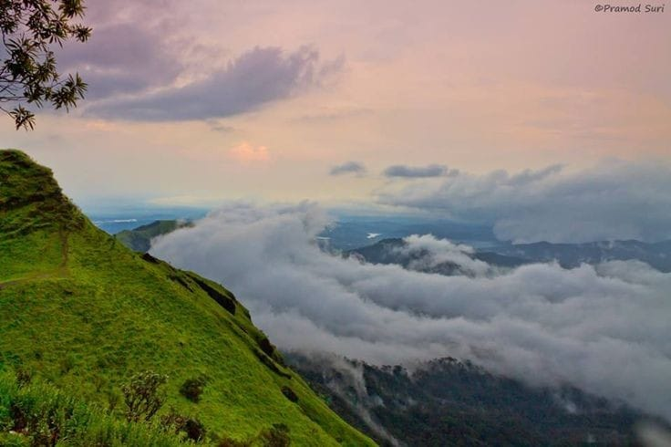

Exploring Kodachadri: A Hidden Gem in the Western Ghats
Nestled in the heart of Karnataka’s Western Ghats, Kodachadri is a treasure trove of adventure, natural
beauty, and spiritual significance. Whether you’re an adrenaline junkie, a nature lover, or someone seeking
peace in nature’s embrace, Kodachadri offers something for everyone. Let’s embark on a journey to this
stunning peak, where every step feels like a story waiting to be told.
Location & How to Reach
Kodachadri is located in the Shivamogga district of Karnataka, about 20 km from Hosanagara. The peak rises
majestically at an elevation of 1,343 meters (4,406 feet) above sea level, offering a breathtaking view of
the surrounding valleys and hills.
The nearest major city is Mangalore, about 150 km away, and from there, you can drive through winding roads
that lead you straight into the heart of nature. The last stretch involves some rugged roads, but the
journey is well worth the effort. The drive, surrounded by lush greenery, sets the perfect mood for your
Kodachadri adventure.
Trekking to the Top: A Thrilling Experience
For the adventurous at heart, the Kodachadri trek is a must-do! This moderate-to-difficult trek is a journey
of discovery through dense forests, cascading waterfalls, and misty hills. It takes about 4-6 hours to reach
the summit, depending on your pace, and offers some of the most spectacular views of the Western Ghats along
the way.
There are two popular routes to begin the trek:
From Hosanagara: This trail winds through dense forests and offers some stunning scenic viewpoints.
From Nittur: This is a slightly shorter route, but it’s equally mesmerizing with breathtaking sights of
waterfalls and the forest cover.
As you climb, the sights only get better. Imagine walking through cool, misty air, with the sound of birds
chirping and streams gushing nearby. Don’t forget to carry a good camera to capture the beauty, as
Kodachadri is a photographer's dream!

Mookambika Temple: A Spiritual Pitstop
At the summit, you'll be greeted by the Mookambika Temple, dedicated to the goddess Mookambika. This sacred
site adds a spiritual touch to your journey, with its peaceful ambiance and historical significance. The
temple is said to be the place where the goddess Mookambika killed the demon Mookasura, and it attracts
pilgrims from all over the region.
Take a moment to soak in the spiritual energy of the place and enjoy the panoramic views that stretch across
the hills and valleys. The sight of the Arabian Sea from here, in the distance, makes it even more special.
Waterfalls: Nature’s Beautiful Symphony
No trip to Kodachadri would be complete without a visit to its majestic waterfalls. Here are a couple you
must see:
Hidlumane Waterfalls: Located near the base of the trek, this beautiful, multi-tiered waterfall is a perfect
place to cool off and take a break after the trek.
Arasinagundi Waterfalls: A short distance from Kodachadri, this serene waterfall is tucked away in the
forest and offers a peaceful atmosphere for relaxation and photography.
Flora and Fauna: The Heart of Mookambika Wildlife Sanctuary
Kodachadri is part of the Mookambika Wildlife Sanctuary, which is teeming with rich biodiversity. The lush
forests are home to a variety of wildlife, including leopards, tigers, elephants, deer, and a wide range of
birds. If you're lucky, you might even catch a glimpse of some of these magnificent creatures during your
trek.
The sanctuary’s dense rainforests, filled with towering trees like rosewood, teak, and bamboo, are also a
haven for nature lovers. The vibrant flora and fauna make Kodachadri not only a great trekking destination
but also an ideal spot for nature photography.
Best Time to Visit
The ideal time to visit Kodachadri is between October and February when the weather is cool and pleasant.
The monsoon season (June to September) offers a lush green landscape, but the trail can be slippery and
challenging. So, for a comfortable experience, the winter months are your best bet.
Where to Stay: Cozy Homestays and Guesthouses
While there are no luxurious resorts at the peak, there are several homestays and guesthouses near the base
of the trek. These places offer a chance to experience local hospitality and enjoy a peaceful night before
or after your adventure. For those looking for more options, nearby towns like Hosanagara and Sagara offer a
variety of stays ranging from budget to mid-range.
Nearby Attractions: Exploring More
If you have time, make sure to explore these nearby attractions:
Sakrebailu Elephant Camp (20 km away): A great place to interact with elephants and learn about their care.
Chandramouleshwara Temple: A historical temple located near the base of Kodachadri.
Barkana Waterfalls: Another beautiful waterfall in the region, perfect for a refreshing stop.
Photography: A Dream Destination
For nature and landscape photographers, Kodachadri is a dream come true. Whether it's capturing the sweeping
views from the summit, the mist-clad forests, or the enchanting waterfalls, the possibilities for stunning
shots are endless. Early morning or late afternoon are the best times to catch the golden light that makes
the place even more magical.
Final Thoughts: A Journey Worth Taking
Kodachadri is a blend of adventure, spirituality, and natural beauty. Whether you're trekking to the top,
visiting the Mookambika Temple, or simply taking in the views, the journey to Kodachadri will leave you with
memories that last a lifetime. So, pack your bags, lace up your shoes, and head to this hidden gem in the
Western Ghats – it’s an adventure you won’t forget!